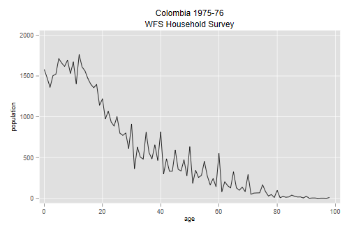
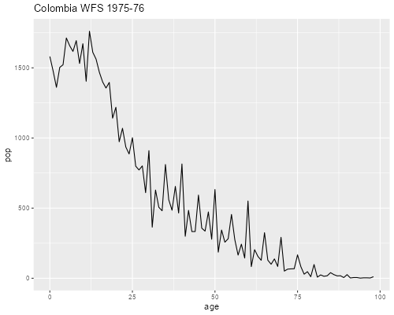
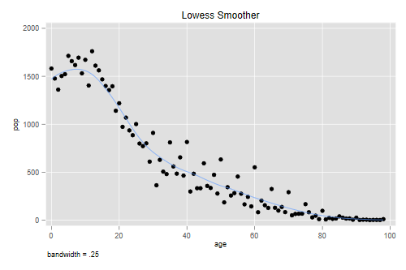
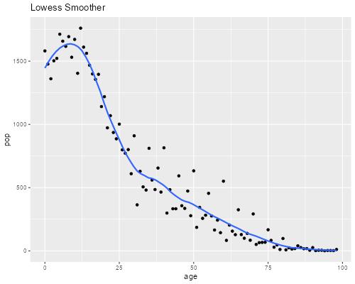

<h2 id="smoothing-lowess">Smoothing: Lowess</h2>
<p>We will work with data from the Colombia WFS Household Survey,
conducted in 1975-76. I tabulated the age distribution of all household
members and saved it in an ascci file, which we now read and plot:</p>

{% include srtabs.html %}

<pre class='stata'>. infile age pop using ///
>   https://grodri.github.io/datasets/cohhpop.dat, clear
(99 observations read)

. line pop age , ///
>   title(Colombia 1975-76) subtitle(WFS Household Survey) ///
>   ytitle(population)

. graph export cohhpop.png, width(500) replace
file cohhpop.png saved as PNG format
</pre>
<p></p>
<pre class='r'>> library(ggplot2)
> co &lt;- read.table("https://grodri.github.io/datasets/cohhpop.dat",
+   col.names=c("age","pop"), header=FALSE)
> ggplot(co, aes(age, pop)) + geom_line() + ggtitle("Colombia WFS 1975-76")
> ggsave("cohhpopr.png", width=500/72, height=400/72, dpi=72)
</pre>
<p></p>
<p>As you can see, the distribution looks somewhat less smooth than the
data from the Philippines that we studied earlier. Can you compute the
Myers index for this distribution?</p>
<h3 id="running-means-and-lines">Running Means and Lines</h3>
<p>The simplest way to smooth a scatterplot is to use a <em>moving
average</em>, also known as a “running mean”. The most common approach
is to use a window of <em>2k + 1</em> observations, <em>k</em> to the
left and <em>k</em> to the right of each observation. The value of
<em>k</em> is a trade off between smoothness of goodness of fit. Special
care must be taken at the extremes of the range. <span
class="stata">Stata can compute running means via <code>lowess</code>
with the options <code>mean</code> and <code>noweight</code>.</span></p>
<p>A common problem with running means is bias. A solution is to use
<em>weights</em> that give more importance to the closest neighbors and
less to those farther away. A popular weight function is Tukey’s
tri-cube, defined as <em>w(d) = (1-|d|<sup>3</sup>)<sup>3</sup></em> for
<em>|d| &lt; 1</em> and 0 otherwise, where <em>d</em> is the distance to
the target point expressed as a fraction of the bandwidth. <span
class="stata">Stata can do this calculation via <code>lowess</code> with
the option <code>mean</code> if you omit
<code>noweight</code>.</span></p>
<p>An even better solution is to use <em>running lines</em>. We define
again a neighborhood for each point, typically the <em>k</em> nearest
neighbors on each side, fit a regression line to the points in the
neighborhood, and then use it to predict a smoother value for the index
observation. This sounds like a lot of work, but the calculations can be
done efficiently using regression updating formulas. <span
class="stata">Stata can compute a running line via <code>lowess</code>
if you omit <code>mean</code> but include
<code>noweight</code>.</span></p>
<p>Better still is to use <em>weighted running lines</em>, giving more
weight to the closest observations, which is what the <em>lowess</em>
smoother does. A variant follows this estimation with a few iterations
to obtain a more robust line. This is clearly the best technique in the
family. <span class="stata">Stata’s <code>lowess</code> uses a weighted
running line if you omit <code>mean</code> and
<code>noweight</code></span></p>
<div class="r">
<p>R implements the lowess smoother through the functions
<code>lowess()</code> and the newer <code>loess()</code>, which uses a
formula interface with one or more predictors and somewhat different
defaults. The parameter <code>degree</code> controls the degree of the
local polynomial; the default is 2 for quadratic, alternatives are 1 for
linear and 0 for running means. Both implementations can use a robust
estimator, with the number of iterations controlled by a parameter
<code>iter</code> or <code>iterations</code>. Type <code>?loess</code>
and <code>?lowess</code> in the R console for more information. In
<code>ggplot()</code> you can overlay a lowess smoother by calling
<code>geom_smooth()</code>.</p>
</div>
<p>The figure below shows the Colombian data and a lowess smoother with
a span or bandwidth equal to 25% of the data.</p>
<pre class='stata'>. lowess pop age, bwidth(0.25) gen(smooth) title(Lowess Smoother)

. graph export cohhrm.png, width(500) replace
file cohhrm.png saved as PNG format
</pre>
<p></p>
<pre class='r'>> ggplot(co, aes(age, pop)) + geom_point() + 
+   geom_smooth(span=0.25, se=FALSE) + ggtitle("Lowess Smoother")
> ggsave("cohhrmr.png", width=500/72, height=400/72, dpi=72)
</pre>
<p></p>
<p>You may want to try different badwidths to see how the results
vary.</p>
<h3 id="digit-preference-revisited">Digit Preference Revisited</h3>
<p>Smoothing the age distribution provides a better way to assess digit
preference than Myers’ blending. Let us compute the last digit of age
and tabulate it over the entire range of the data using the observed
frequencies and a lowess smoother.</p>
<pre class='stata'>. gen lastdigit = mod(age,10)

. tab lastdigit [fw=pop], matcell(obs)

  lastdigit │      Freq.     Percent        Cum.
────────────┼───────────────────────────────────
          0 │      7,797       13.99       13.99
          1 │      4,847        8.69       22.68
          2 │      5,946       10.67       33.35
          3 │      5,388        9.66       43.01
          4 │      5,281        9.47       52.48
          5 │      6,577       11.80       64.28
          6 │      5,290        9.49       73.77
          7 │      4,879        8.75       82.52
          8 │      5,476        9.82       92.34
          9 │      4,269        7.66      100.00
────────────┼───────────────────────────────────
      Total │     55,750      100.00
</pre>
<pre class='r'>> library(dplyr)
> N &lt;- sum(co$pop)
> obs &lt;- co |> 
+   mutate(last_digit = age %% 10) |> group_by(last_digit) |>
+   summarize(prop = sum(pop)/N)
> obs
# A tibble: 10 × 2
   last_digit   prop
        &lt;dbl>  &lt;dbl>
 1          0 0.140 
 2          1 0.0869
 3          2 0.107 
 4          3 0.0966
 5          4 0.0947
 6          5 0.118 
 7          6 0.0949
 8          7 0.0875
 9          8 0.0982
10          9 0.0766
</pre>
<p>The raw frequencies show evidence of preference for ages ending in 0
and 5, which is very common, and probably 2 as well. We now use the
smooth as weight</p>
<pre class='stata'>. tab lastdigit [aw=smooth], matcell(fit)

  lastdigit │      Freq.     Percent        Cum.
────────────┼───────────────────────────────────
          0 │ 11.0366512       11.15       11.15
          1 │ 10.8233452       10.93       22.08
          2 │10.59322023       10.70       32.78
          3 │ 10.3362373       10.44       43.22
          4 │ 10.0601082       10.16       53.38
          5 │ 9.77877815        9.88       63.26
          6 │ 9.50162757        9.60       72.86
          7 │ 9.22961745        9.32       82.18
          8 │ 8.95876398        9.05       91.23
          9 │ 8.68165074        8.77      100.00
────────────┼───────────────────────────────────
      Total │         99      100.00
</pre>
<pre class='r'>> lf &lt;- as.data.frame(lowess(co$age, co$pop, f = 0.25))
> M &lt;- sum(lf$y)
> fit &lt;- lf |> mutate(last_digit = x %% 10) |> group_by(last_digit) |>
+   summarize(prop = sum(y)/M)
> fit
# A tibble: 10 × 2
   last_digit   prop
        &lt;dbl>  &lt;dbl>
 1          0 0.114 
 2          1 0.111 
 3          2 0.108 
 4          3 0.105 
 5          4 0.101 
 6          5 0.0983
 7          6 0.0952
 8          7 0.0922
 9          8 0.0894
10          9 0.0867
</pre>
<p>The smoothed frequencies show that we expect fewer people at higher
digits, even in a smooth distribution, with more ending in 0 than 9. We
are now ready to compute an index of digit preference, defined as half
the sum of absolute differences between observed and smooth
frequencies:</p>
<pre class='stata'>. mata: obs = st_matrix("obs"); fit = st_matrix("fit")

. mata: sum(abs(obs/sum(obs) - fit/sum(fit)))/2
  .0553043845
</pre>
<pre class='r'>> sum( abs(obs$prop - fit$prop) )/2
[1] 0.0547919
</pre>
<p>We see that we would need to reshuffle 5.5% of the observations to
eliminate digit preference. You may wish to compare this result with the
Myers index.</p>
